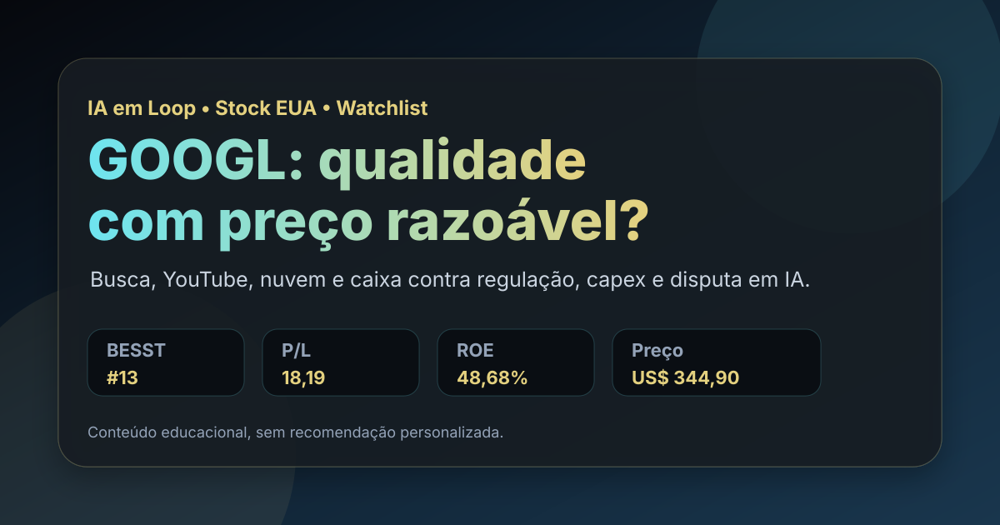

14/08: GOOGL, Alphabet e o preço da máquina de caixa da busca
GOOGL aparece na watchlist permanente dos Estados Unidos e no top 20 do BESST & Buffett EUA. A pergunta central é direta: Alphabet ainda combina qualidade com valuation razoável ou o risco regulatório e o capex de inteligência artificial mudaram a conta?

Alphabet combina busca, YouTube, nuvem e caixa em escala; o ponto sensível é se a disputa em inteligência artificial e a regulação reduzem a margem de segurança.
Resposta curta: qualidade forte, mas sem piloto automático
No ranking BESST & Buffett EUA com data-base de 06/08/2026, GOOGL aparece em 13º lugar, com score 58,78, P/L de 18,19, EV/EBITDA de 25,00, ROE de 48,68% e dividend yield de 0,24%. GOOG aparece logo depois por ser outra classe da mesma empresa; para leitura econômica, faz sentido olhar Alphabet uma única vez e usar GOOGL como referência do estudo.
A empresa não está na carteira real dolarizada registrada no site, mas está na watchlist permanente dos Estados Unidos. Isso coloca a análise no campo de acompanhamento para possível entrada futura: negócio dominante, caixa alto e múltiplo menos esticado que outros nomes de tecnologia, mas com riscos reais em antitruste, custo de data centers e competição em busca.
O que os dados verificados mostram
A consulta pública à SEC no CIK 0001652044 mostra que a Alphabet arquivou 10-Q em 23/07/2026, referente ao trimestre encerrado em 30/06/2026. No 2T26, a companhia registrou US$ 119,796 bilhões de receita, US$ 40,770 bilhões de lucro operacional e US$ 112,193 bilhões de lucro líquido.
No acumulado do primeiro semestre de 2026, a SEC mostra US$ 229,692 bilhões de receita, US$ 80,466 bilhões de lucro operacional, US$ 174,771 bilhões de lucro líquido e US$ 84,859 bilhões de caixa operacional. O investimento em imobilizado no período foi de US$ 80,598 bilhões, ponto que deixa clara a mudança de regime: inteligência artificial e nuvem exigem capital pesado, mesmo em uma empresa altamente lucrativa.
No balanço de 30/06/2026, a Alphabet tinha US$ 921,983 bilhões em ativos, US$ 55,911 bilhões em caixa e equivalentes e US$ 640,480 bilhões de patrimônio líquido. O tamanho do balanço dá resiliência, mas também aumenta a cobrança: uma empresa desse porte precisa transformar investimento em infraestrutura em crescimento rentável, não apenas em narrativa tecnológica.
| Métrica verificada | Fonte/período | Valor | Leitura |
|---|---|---|---|
| Receita trimestral | SEC 10-Q 2T26 | US$ 119,796 bi | escala massiva de publicidade, nuvem e serviços |
| Lucro operacional trimestral | SEC 10-Q 2T26 | US$ 40,770 bi | margem ainda muito forte |
| Caixa operacional | SEC 1S26 | US$ 84,859 bi | alta capacidade de autofinanciamento |
| Investimento em imobilizado | SEC 1S26 | US$ 80,598 bi | custo elevado da corrida por infraestrutura |
| Caixa e equivalentes | SEC 30/06/2026 | US$ 55,911 bi | colchão financeiro relevante |
Por que Alphabet importa para a watchlist
Alphabet é uma das poucas empresas que une distribuição global, dados, marca, engenharia, caixa e múltiplas avenidas de crescimento. Busca continua sendo o motor econômico; YouTube amplia presença em vídeo; Google Cloud dá exposição empresarial; e a camada de inteligência artificial pode proteger ou canibalizar partes do negócio.
A leitura de valuation é menos óbvia do que em empresas de tecnologia negociadas a múltiplos extremos. O P/L local de 18,19 e o preço público consultado em 14/08/2026 perto de US$ 344,90 sugerem que o mercado não precifica Alphabet como uma história sem risco. A dúvida é se esse desconto relativo compensa as incertezas regulatórias e o aumento do capital necessário para competir.
GOOGL parece mais interessante como empresa de qualidade sob observação do que como compra automática. A tese melhora se a nuvem e a inteligência artificial converterem capex em lucro incremental; piora se a busca perder poder de distribuição ou se decisões regulatórias comprimirem margens.
O que favorece e o que ameaça a tese
Favoráveis
• Busca e YouTube mantêm alcance global difícil de replicar.
• Caixa operacional elevado financia inovação, infraestrutura e defesa competitiva.
• P/L abaixo de vários pares de tecnologia reduz parte do risco de preço.
• Google Cloud pode ampliar diversificação fora de publicidade.
• Presença na watchlist permite acompanhar sem forçar entrada.
Desfavoráveis
• Regulação antitruste pode afetar distribuição, contratos e modelo de anúncios.
• Inteligência artificial aumenta capex e pode alterar a economia da busca.
• Competição em nuvem exige preço, escala e execução operacional.
• Dependência de publicidade deixa a empresa sensível ao ciclo econômico.
• Duas classes negociadas podem distorcer rankings; a análise deve consolidar a empresa.
Checklist para acompanhar daqui em diante
| Ponto | O que monitorar | Se piorar |
|---|---|---|
| Busca | crescimento de receita e estabilidade de participação | o principal motor de lucro perde previsibilidade |
| Nuvem | margem e crescimento do Google Cloud | capex pode virar pressão, não vantagem |
| Capex | investimento em data centers versus lucro incremental | a tese de caixa livre fica menos limpa |
| Regulação | decisões antitruste e restrições de dados | o fosso de distribuição pode diminuir |
| Valuation | P/L, EV/EBITDA e comparação com crescimento | preço deixa de compensar o risco regulatório |
Conclusão
A resposta para a pergunta do post é: Alphabet ainda combina qualidade e valuation observável, mas a tese depende cada vez mais da conversão de inteligência artificial e nuvem em lucro real. A base de busca e YouTube sustenta a máquina de caixa; o capex e a regulação impedem tratar o ativo como caso sem risco.
Na régua do IA em Loop, GOOGL merece seguir na watchlist como empresa de alta qualidade, com preço menos agressivo que outros nomes de tecnologia. A entrada fica mais defensável quando houver desconto maior ou evidência de que o investimento pesado em infraestrutura está ampliando, e não consumindo, a margem de segurança.